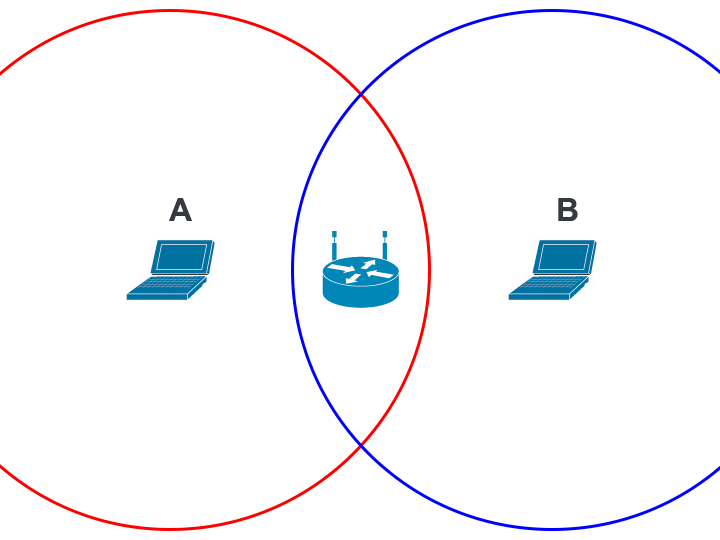
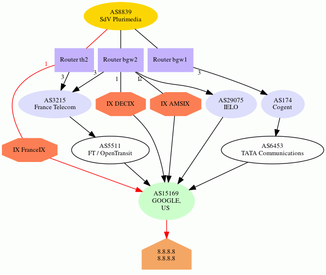
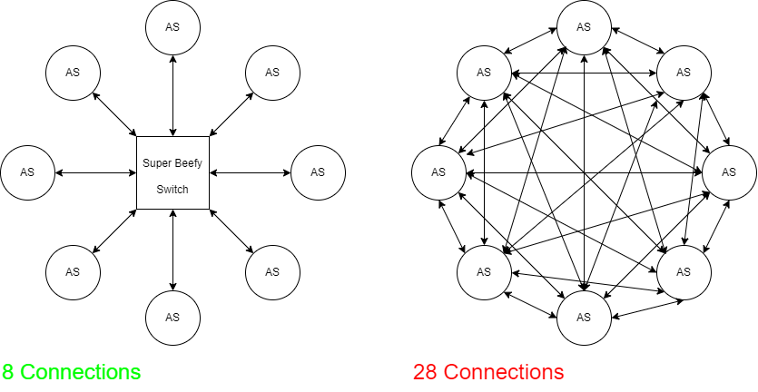
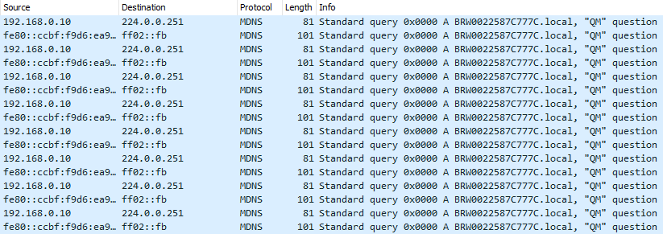

Some time ago, it occurred to me that I didn't really understand what made the Internet work. Sure, I am all too familiar with what the user experience is like, and my adventures in web development have forced me to acquire a bit of networking knowledge, but between the bits of light here and there existed vast chasms of confusion. So I decided to do some reading, some soul-searching, and publish my findings in the form of a blog post.
The word "internet" itself offers some hints about its architecture. "Internet" is short for internetworking, the act of unifying numerous computer networks under one protocol. That's essentially what the Internet is, a bunch of independently maintained networks that are joined together such that any two computers on the Internet can reach each other, even if the physical protocols that the two devices use to reach their peers are completely incompatible.
Physical Layer §
Let's start from the very bottom. No Internet, no networks even. Our goal is to simply transfer some information from point A to point B. It turns out that there are incredibly many ways to accomplish this, each with its own strengths and weaknesses.
In the context of the Internet, we refer to the rules which govern how data is encoded and transmitted through a physical medium as the physical layer. This involves everything from the actual connectors or radio bands used for communication, to the line codes which specify how to extract a bitstream from the measured values of a signal.
The physical layer is closely tied to the link layer, which leverages the physical layer's capabilities to transfer discrete units of data ("frames") over a network, especially one with topology more complicated than a single point-to-point link. It may also take on responsibilities such as error correction and automatic retransmission.
The physical layer and link layer are generally tightly coupled (out of necessity), which is the source of endless frustration. For example, the term "Ethernet" might refer to the physical cable standard, but it could also refer to the Ethernet protocol used to transfer frames over those cables. Which is it?
The full answer is that Ethernet spans several network layers, because it supports a variety of physical transmission media. There's of course the classical twisted pair cable, but Ethernet also works over coaxial cable and optical fiber. Ethernet itself belongs to a bigger group of IEEE 802 technologies, which also includes protocols like Wi-Fi. All IEEE 802 protocols implement a link-layer interface called medium access control (MAC), allowing interoperation between them.
Under MAC, each network interface has a unique 48-bit identifier known as a MAC address. These addresses are allocated by IEEE to manufacturers of network equipment, though some mobile devices simply generate a random MAC address for privacy reasons. We'll see how MAC addresses are used in routing later.
Beyond Ethernet, there are no shortage of other physical and link-layer technologies. Here are some prolific examples:
- WiFi (IEEE 802.11)
- Cable (DOCSIS)
- LTE
There are also plenty of obscure and dead LAN technologies. One example is Token Ring, IBM's Ethernet competitor, which was famously vanquished around the turn of the century.
Switches §
Devices called network switches allow communication between interfaces on the same LAN. A switch is basically an embedded device with a large number of Ethernet ports. Because all devices on the network communicate with each other by talking through the switch, a star topology is formed.
Ethernet frames are fairly simple in structure. Each frame contains the source MAC address and destination MAC address (along with other fields such as a checksum) before the payload, so that the frame can be routed to the correct recipient.
When computer A wants to send a message to computer B, it sends a frame to the switch with computer B's MAC address. However, the switch doesn't know which physical port the connection to computer B is located on, so it relays the frame to every connected device in hopes that one of them is the intended recipient (a practice known as flooding). When computer B receives the frame, it might reply with another frame. That frame would contain computer B's MAC address as the source, allowing the switch to internally associate the physical port it received the frame on with computer B's MAC address. In the future, when the switch receives a frame with computer B as its destination, it knows exactly where to send the frame.
Switches are one of the most ubiquitous building blocks of computer networks, so it's no surprise that they are all over the place. If your router has more than one Ethernet port, chances are it has a built-in switch.
WiFi §
Ethernet is the most common standard for wired communications, but most people access their network wirelessly when at home. So let's talk about WiFi, which is standardized in IEEE 802.11. The biggest difference in wireless networking is that for the purposes of a residential LAN, point-to-point links don't exist. Instead, devices communicate with the LAN by broadcasting on a predetermined frequency. All devices on the LAN receive and decode incoming frames, and simply filter out the ones which aren't intended for them.
However, this comes with the pitfall that only one device can transmit at a time on a given channel. The situation is similar to what happens when multiple people try to have a conversation in a small room. WiFi can't use CSMA/CD either, because CSMA/CD relies on transmitters being able to listen for a colliding signal while transmitting; that's easy for wired network devices, which transmit and receive on physically isolated wires, but WiFi transceivers have to stop receiving while transmitting or they'd only be able to hear their own signal. Thus, collision avoidance is used, where transceivers wait until the network has been quiet for some time before starting to transmit.

Collision avoidance sometimes fails, though. Check out this diagram, where the red and blue circles represent the range which devices A and B can receive communications, respectively. Device A cannot hear device B, so it has no way to avoid transmitting at the same time as device B. If that happens, the device at the center (which is in range of both device A and device B) will be unable to decipher either device's transmission. This is called the hidden node problem.
To alleviate the hidden node problem, WiFi implements an algorithm called Request-to-Send/Clear-to-Send, or RTS/CTS. With RTS/CTS, every node asks the access point whether it's okay for them to transmit in combination with checking if the channel is quiet. Only when a clear-to-send message is received from the access point does the device send the packet. RTS/CTS is always used, but under the right conditions it is shown to give a fairly significant boost to network throughput.
Speaking of which, what is an access point, anyways? We've already established that unlike in a wired network, a central switching point is not strictly necessary for wireless networks; every device includes a transceiver, so any two WiFi-enabled devices can talk to each other without external help. Instead, the job of a wireless access point is to serve as the gateway between the local network and greater Internet. Speaking of which…
Internet Layer §
We've finally reached the Internet layer of the Internet. This is where all the action happens! Buckle up, and let's explore how it works.
Unsurprisingly, the Internet is powered by the Internet Protocol. There are actually two different versions of IP with widespread deployment: IPv4, and IPv6. The fundamental concepts are very similar, but there are important differences between the two protocols.
In IP, every network interface is associated with an IP address. In IPv4, this address is 32-bits long, and usually written as a series of four numbers (each corresponding to a byte or octet of the IP address) separated by periods. For example, the IP of this blog at the time of writing is 142.93.26.121. IP addresses are managed by the Internet Assigned Numbers Authority, which assigns blocks of IP addresses to the five Regional Internet Registries. The RIRs, in turn, deal with requests from individuals and businesses for IP allocations.
Because IPv4 addresses are only 32 bits long, there can only be 232 = ~4 billion unique IPv4 addresses. That seems like a lot, but as early as the 90s the threat of running out of IPv4 addresses has continually loomed over the Internet, made worse by the fact that many parts of IPv4 space are reserved for various purposes.

To fix this issue, IPv6 was created. IPv6 addresses are 128 bits long, which is more than enough to serve humanity's needs at the moment; for reference, you could assign each human alive a trillion IPv6 addresses and it wouldn't even scratch 1% of the full IPv6 space. IPv6 addresses are written as a series of two-octet groups, like 2607:f8b0:4005:080b:0000:0000:0000:200e. Sequential groups of zeroes can omitted, so the previous address would be written as 2607:f8b0:4005:80b::200e.
Packets §
One of the key innovations that made the Internet possible was packet switching. The idea behind packet switching is to split digital data to be transferred into discrete chunks, or packets. Whenever a machine receives a packet, it consults its routing table to determine which host to send the packet to next. Thanks to its ubiquity, packet switching probably seems fairly mundane to most programmers today, but at the time (when the predominant paradigm for telecommunications was circuit switching), packet switching was revolutionary.
Compared to circuit switching, packet switching allows for much more diverse network topologies. This is because each packet is delivered independently, so they can take whatever route happens to be best at the moment. Compare that to a telephone call, where a physical circuit is established between the two parties and maintained for the duration of the call. Packet switching also makes it easy to bridge networks running different link-layer protocols. All of these attributes have helped the Internet scale to billions of connected devices.
So what's in a packet? Well… see for yourself! Here, I've got a Ethernet frame produced by the ping command. The Ethernet header is orange. Within the frame is an IPv6 packet (blue), which contains an ICMPv6 message (purple).
Guide: Click on a section of the packet to see a description of its significance. Click the hex preview on the left to return to the top. Try enabling "show all" if you want to read all the section descriptions.
The destination MAC address, my router.
The source MAC address, my laptop.
The type of data contained within the frame. 0x86dd indicates that the frame contains an IPv6 packet.
The upper 4 bits of these bytes indicate the Internet Protocol version in use. In this case, it's 6 for IPv6.
The next 8 bits are the traffic class, which gives routers hints about how the packet should be handled. For example, a video conferencing application might set this field to prioritize low latency over delivery reliability. In this case, the value is set to zero, which is the default value (best effort).
The last 20 bits are the flow label (0x64d6f). Flow labels are pseudorandom numbers that serve to group packets belonging to the same "flow". For example, all the packets in a TCP session might be sent with the same flow label. This is mainly used for quality-of-service purposes.
The length of the IPv6 packet's payload, 64 bytes in this case.
In this packet, the IPv6 header is followed immediately by the packet payload, so the Next Header value is equal to 0x3a since that is the assigned number for ICMPv6.
The hop limit is a special field which is used to mitigate the effects of routing loops. Every time a router forwards an IPv6 packet, it decrements the hop limit by one. Once the value reaches zero, if it still hasn't reached the destination host, the packet is discarded.
In IPv4 packets this field is called the time-to-live (TTL), so you will see the same concept referred to by two different names.
The IPv6 address of the host sending the packet.
The IPv6 address of the destination host. In this case, it's the IPv6 address of bithole.dev.
The type of ICMPv6 packet. 0x80 equals Echo Request, meaning that the client is requesting that the server respond with another ICMP packet to test the connection between the two.
This field is always zero for echo requests.
A two-byte checksum value is calculated and included with every ICMPv6 message. This allows recipients to determine if the packet has been corrupted in transit.
When the server receives the Echo Request, it will send back an Echo Reply with the same identifier. This helps match echo replies with echo requests.
Similar to the identifier, this is another field used to distinguish echo requests/replies.
Arbitrary data that the server will also include in the echo reply, hence "echo".
For this illustration I chose to use an IPv6 packet since they are slightly simpler than IPv4 packets, but the fields contained are basically the same. There is one key difference, however: IPv4 also supports a feature called fragmentation. Remember what I mentioned earlier about the maximum transmission unit (MTU)? MTUs are not consistent everywhere, so occasionally a router may encounter a scenario where it is unable to relay an IP packet as-is because it is too large to fit within the next link's MTU. In that situation, IPv4 routers may choose to break the packet into multiple smaller fragments, which will be reassembled later down the line.
Fragmentation is not free, however. Not only does fragmentation increase overhead, it can exacerbate problems such as packets arriving out of order. Worse, applications that don't properly handle fragmented packets (such as firewalls) may be vulnerable to fragmentation attacks. For this reason, IPv6 routers are not allowed to fragment packets; if a packet is too big to be relayed, an error is sent to the sender through ICMPv6. Hosts are responsible for determining the largest packet that can be transmitted by the routers between the source and the recipient. This process is known as path MTU discovery.
Obtaining an IP address §
In order to send or receive IP traffic, you first need an IP address. Your computer could obtain one through several methods:
- It is configured to use a specific static IP address.
- It receives an IP address while connecting to the network, via the Dynamic Host Configuration Protocol (DHCP).
- (other less straightforward schemes)
Let's talk about DHCP. DHCP is built on top of UDP, which in turn resides above IP. It allows newly-connected clients to contact the local DHCP server and obtain an IP address. Right off the bat, there are two challenges:
- How can the computer send/receive DHCP packets, which are carried via IP, if it doesn't have an IP address yet?
- How does the computer discover the DHCP server?
To solve the first problem, clients use a source IP of 0.0.0.0 in their initial DHCP requests. The DHCP server distinguishes incoming requests not by source IP but by MAC address. To discover the DHCP server, all DHCP requests are directed to a special IPv4 address, 255.255.255.255, which broadcasts the packets to all nodes on the network. By seeing which IP replies, a device can figure out which IP the DHCP server is running on.
Okay, so we've obtained an IP address. Now what?

Suppose computer 10.0.0.2 wants to send a message to 10.0.0.3. In order to actually deliver a message to 10.0.0.3, our sender needs to know which MAC address to send packets to. It can obtain this information via the Address Resolution Protocol (ARP).
Obtaining an IP Address, IPv6 Style §
DHCP exists for IPv6 in the form of DHCPv6, but several alternative ways to obtain an address are also provided. In this section, we're going to be covering StateLess Address AutoConfiguration (SLAAC).
TODO
Address Resolution Protocol §
If you want to send a packet to some IP address, the process goes something like this:
- Determine which MAC address represents that IP
- Create the IP packet
- Encapsulate the IP packet in an Ethernet frame
- Send the frame to that MAC address
How do we look up the MAC address for a given IP? This is where the Address Resolution Protocol (ARP) steps in. ARP operates on the link layer, meaning that ARP packets are not encapsulated in IP packets. When a computer needs to determine the MAC address for an IP address, it broadcasts an ARP request to the local network. This is done by sending frames addressed to a MAC address of FF:FF:FF:FF:FF:FF, which signals to the switch that the message should be relayed to all connected devices. The device which has the corresponding IP responds to the request with its MAC and IP address. Both of these devices may cache each others' IP and MAC addresses to avoid making another ARP request in the future. In the future, when a device joins a network or obtains a new IP address, it may publish an ARP announcement that prompts all other devices to update their ARP caches.
ARP is ubiquitous among IEEE 802 networks. If your computer is on a WiFi or Ethernet-based network, you can install Wireshark and observe ARP requests happening right before your eyes.
Your computer doesn't make an ARP request for every single outgoing IPv4 connection. If configured correctly, your computer should be able to tell which addresses belong to the local network (i.e. they can be reached by MAC address) and which reside on the public internet.
Introduction to CIDR §
During the Internet's infancy, the format of IP addresses was much simpler. As seen in RFC 760, published in January 1980, the first 8 bits of each IP address identified which network it originated from, and the remaining 24 bits were unique to each host. This limited the Internet to just 256 networks (technically 254 since addresses beginning with 0 are reserved for local use and addresses beginning with 255 are used for broadcast). It soon become apparent that the Internet would grow to encompass much more than just 256 networks, so the classful network scheme was adopted.
Under classful networking, each network belongs to one of three classes:
- Class A: The first 8 bits of the IP address identify the network, leaving 24 bits = 16,777,216 addresses for host identification.
- Class B: The first 16 bits of the IP address identify the network, leaving 16 bits = 65,536 addresses for host identification.
- Class C: The first 24 bits of the IP address identify the network, leaving 8 bits = 256 addresses for host identification.
(The actual scheme had some more details which are omitted here.)
Eventually, engineers realized that the classful networking scheme was still rather inefficient; the size difference between classes was far too granular, and many IP addresses were going to waste. So classful networks were done away with, and a new system, Classless Inter-Domain Routing (CIDR), was adopted.
Under CIDR, the number of network/host bits is variable, instead of being fixed at 8, 16, or 24. This allowed IPs to be allocated with much less overhead. In CIDR notation, the length of the network prefix is written after the IP and separated with a slash. For example, the IP of this server at the time of writing is 142.93.26.121. It belongs to a bigger subnet, 142.93.16.0/20, which encompasses all IP addresses whose first 20 bits match those of 142.93.16.0. The length of this network's prefix is 20 bits, leaving 12 bits for hosts on the subnet, which gives it a maximum capacity of 212 = 4096 hosts.
Complementary to CIDR is the idea of a netmask. For a given classless network, its netmask is a special 32-bit value where all the prefix bits are set to 1 while all the host bits are cleared. The routing prefix of an address can be obtained by finding the bitwise AND of the address and the netmask. If the routing prefix doesn't match that of the local network, your computer won't perform an ARP lookup, since only machines on the same LAN can be contacted via MAC address.
Going Public §
So what happens when your computer encounters an IP that isn't on the LAN? Thankfully for your poor computer, handling the routing of this packet across the public Internet is mostly outside of its responsibilities. Your computer has a default route, which specifies who to contact to relay packets outside the local network. That device is called the default gateway, since it serves as a gateway to the rest of the world.
Your router itself has a default gateway, too. In fact, your router's view of the internet isn't really different from that of your computer's: it too is just part of a bigger network, owned by your ISP instead of you. Other than that, pretty much all the other details stay the same; your router has a subnet mask, it performs ARP requests, and it relays packets which aren't on its network to the default gateway. In fact, your router probably obtains its address from the ISP through DHCP as well. (That's why rebooting your router may result in your home network being assigned a new IP address. Realistically, however, most routers remember their previous IP address and simply request the same one when they boot up again.)
NAT: A Perpetual Annoyance §
Hey, remember IPv4 exhaustion? Yup. It's me again. Here to make your life slightly worse for the umpteenth time. When will you learn?
As I write this blogpost, IPv6 will have been available for an entire decade in just a couple months, yet IPv6 adoption still languishes at around 35%. As it stands, the majority of the Internet is only available over IPv4, yet IANA allocated all of its IP addresses to the RIRs in 2011; RIPE NCC, one of the five RIRs, was the last to run out of addresses in 2019. Nowadays, if you want to get your hands onto some IPv4 addresses, you'll have to turn to the IP aftermarket, where you'd be paying a price of anywhere from 40 to 120 bucks a pop.
This ever-worsening drought of IP addresses has forced the Internet's biggest players, the ISPs, to get creative. One solution that has been used to combat IPv4 exhaustion is Network Address Translation (NAT). NAT precludes the need to assign every device on a household network a unique IP address. Here's how it works.
Each device on the LAN has a private IP address. In this case, the addresses are from the 10.0.0.0/8 block, one of three blocks which are reserved for use within private networks. These are not directly usable for accessing the internet; most networks are configured to reject packets originating from outside the network with a private IP. Instead, when the NAT router receives a packet from a device that is destined for the public Internet, it overwrites the original address with the router's public address before relaying it. This way, all the devices on the LAN can access the Internet through just one address.
But wait, you might say. When the router receives an incoming packet, how does it know which device to forward it to? Ah. You've stumbled across one of NAT's biggest flaws. The protocol that is being NATed must provide some way to keep track of which connection is which. For TCP, arguably the most common protocol on the Internet, this is done through the port number. For instance, if 10.0.0.1 makes a request to public IP 100.2.3.4, the router will overwrite both the source address in the IP header and the source port in the TCP header with an arbitrary, unique port. It will remember this port information and, when 100.2.3.4 sends a TCP response, the router can forward the packets to the appropriate device on the local network by reading which port they are addressed to.
The fact that the router must remember which port is associated with which local connection makes NAT stateful, which stands directly at odds with IP's stateless nature. Furthermore, NAT also violates the end-to-end principle, which states that protocol logic should only be handled at each end of the network route; intermediate nodes shouldn't need to know anything about the data they are relaying. Even worse, there are some protocols that simply don't work with NAT.
Finally, while NAT works reasonably well for consumers, it is for the most part fundamentally incompatible with server hosting, which requires listening on a specific well-defined port that often can't be changed. If you've ever tried to host a Minecraft server out of your home network, you're probably familiar with this struggle. This hasn't stopped Google from offering cloud NAT for serving multiple unrelated services on different ports.
NAT doesn't have to stop at the residential level, though. Under carrier-grade NAT (CGNAT), entire WANs are encapsulated under address translation, further reducing IPv4 address usage. IANA allocated the 100.64.0.0/10 block for use with CGNAT in 2012.
Where Does Internet Actually Come From? §
We've established that your router doesn't really do anything special, it just serves as a gateway between your LAN and your ISP's larger network. So how does your ISP get on the Internet? This is where things really start getting interesting.
So far, our trusty little packet has faced some pretty tough trials. He was disassembled and reassembled when he crossed the NAT firewall, and now he's being bounced around the ISP's internal network. How does he find his way to the Promised Land, the destination IP?
Routing within the ISP network may be driven by any one of several protocols. Intermediate System to Intermediate System (IS-IS) and Open Shortest Path First (OSPF) are often used for internal routing, from what I gather, but information on the topology of ISP networks and how they manage their routes is scarce as expected. Both IS-IS and OSPF are link state routing protocols, meaning that routers broadcast their links to the internal network, allowing other routers to build a map of the network and calculate the optimal route to each node using an algorithm such as Dijkstra's algorithm.
But what if the destination isn't in the ISP's network?
Autonomous Systems §
At the very top level, the Internet is organized into autonomous systems. Generally, all the IPs within an AS are controlled by one organization (usually a corporation) and can reach each other without leaving the AS. The AS is defined by the list of routing prefixes that belong to the AS, and each AS is assigned a number (an ASN) by our good friend IANA.
When you look at the Internet at the AS level, the illusion is truly stripped bare, and you can see the Internet for what it is: a bunch of servers, organized into ASes, with connections running between them.
Routing between ASes is universally done via the Border Gateway Protocol, which is a path vector routing protocol as opposed to a link state routing protocol. Instead of broadcasting the existence of links throughout the network, BGP routers advertise which ASes they can reach and the path to take to their peers. This has the benefit of preventing the possibility of a loop, which would pose a serious problem at a global scale. In general, BGP is designed to reduce volatility in Internet routing. To reduce network usage and routing table size, BGP routers may use heuristics to selectively reject routes, a process known as route filtering. (The side-effect of route filtering is that no router on the Internet has a complete view of all routes, so collecting statistics on the routing table requires careful observation from numerous viewpoints.)
The BGP routing itself looks just like the routing table you'd find on your router or computer, just much bigger (around 900,000 unique prefixes at the time of writing). Its functionality remains unchanged, though. When a border router receives a packet:
- If the packet is destined to the internal network, it relays the packet based on whatever routing protocol the AS internally uses.
- Otherwise, it consults its routing table, finds the best next hop, and relays the packet to that BGP peer.
Not every AS is connected with each other; often, Internet packets will travel through networks belonging to several ASes until they reach their destination. You can see this for yourself using the traceroute utility. Many Internet infrastructure operators also run public Looking Glass servers, which allow users to run traceroutes or retrieve BGP route information from their backbone servers. In particular, SdV operates a graphical traceroute tool which lets you visualize all the routes to a certain IP available in their border gateways' routing tables. Here's an example output for 8.8.8.8, which is Google's public DNS project.

The red arrows signify the best path, the one that packets would actually follow in the network. As you can see, there is more than one way to reach the destination; Google is part of France-IX, which SdV is also a member of. The purple rectangles represent border routers within SdV's own network; they aren't shown for other networks since they are normally obscured from public view.
The Politics of Peering §
In the words of Kenneth Finnegan, regarding BGP peering:
This is obviously where human networking becomes exceedingly important in computer networking.
Broadly speaking, inter-AS connections can be categorized into two types:
- Peering is an agreement between two ASes to share traffic, usually out of mutual benefit. Most commonly, "peering" refers to settlement-free peering, so no party is paying for the connection.
- Transit is a paid service where an AS with a highly interconnected global network offers to peer with another AS in exchange for a fee.
Note that peering and transit are the same thing from a technical standpoint. Also, BGP peering simply refers to the existence of a connection between two ASes. It doesn't necessarily mean that no settlement is involved.
Another staple of backbone routing is the Internet Exchange Point (IXP). IXPs are essentially a series of interconnected switches, usually managed by a non-profit organization, that allow many ASes to peer with each other without a huge number of cross-connections.
IXPs are a pretty great thing for a number of reasons. They provide a way to peer with numerous other ASes, reducing latency for everyone, while avoiding the large number of physical connections that would be necessary to reach the same level of connectedness that would be necessary otherwise.

If you are interested in internet exchanges, I encourage you to checkout the Fremont Cabal Internet Exchange, a burgeoning IXP based out of Fremont, California (which is also my hometown!) The blogpost about its creation is as informative as it is humorous.
Not All ASes Are Made Equal §
Some ASes are more connected than others. You may hear talk about so-called "tier 1" networks; generally speaking, tier 1 networks are ASes which don't need to pay for transit to reach any other AS on the Internet. They are few and far between, mostly because the Internet has grown to the point where it's very hard to reach every network without at least paying somewhere along the way.
Historically, many tier 1 networks were primarily located in the US, resulting in a lot of traffic flowing through US networks. This trend has slowly eroded, however, as Internet infrastructure becomes more advanced in other countries. Conversely, the NSA diverts American traffic offshore so that it can legally perform surveillance.
Tier 1 networks are followed by tier 2 (pay for transit to reach some ASes) and tier 3 (exclusively pay for transit).
BGP Mishaps §
BGP has a history of high-profile screwups with cascading consequences, often taking down large segments of the Internet. Just last year, Facebook suffered a total outage due to what later turned out to be a BGP misconfiguration. BGP is in fact rather vulnerable to hijacking attacks, since any AS could announce a high-priority bogus route that could make affected network prefixes unroutable. Resource Public Key Infrastructure (RPKI) was created to resolve this problem, but adoption still remains a challenge. Here are some notable BGP incidents:
- February 2008: Pakistan Telecom (AS17557) brought YouTube offline by broadcasting prefixes for YouTube IPs in a severely misguided attempt to block the website.
- August 2014: Canadian hackers repeatedly redirected traffic through their servers to steal cryptocurrency miners' earnings.
- December 2017: A Russian autonomous system (AS39523) announced routes for prefixes normally leading to services run by Apple, Facebook, Microsoft, and others. This came after years of no route announcements.
BGP has faced other issues than hijacking, though. Though not a problem with the protocol itself, historically many border routers had a limit of 512K routes, so when the BGP routing table suddenly grew to above that threshold on August 12, 2014, numerous Internet companies faced outage as BGP routing slowed to a crawl.
Multicast and Anycast §
So far, we've only discussed unicast traffic, where packets are routed from one host to the next. However, IP also supports alternative routing schemes.
Anycast routing allows numerous geographically separate hosts to operate under the same IP. When you send a packet to an anycast address, it is delivered to the "closest" host as seen by the core routers along the path. This allows traffic to be automatically distributed between several servers, potentially reducing latency and increasing throughput. However, because IP is stateless, packets addressed to anycast packets are not guaranteed to arrive at the same host, which could potentially disrupt stateful protocols like TCP. As a result, anycast is most popular for scaling protocols where transactions are short-lived (and thus the odds of a connection being disrupted are low). In particular, many DNS services (such as all of the root name servers and many popular DNS resolvers) are scaled using anycast.
Multicast routing allows packets to be delivered to any hosts which have indicated that they are willing to participate in a given multicast group, managed by the Internet Group Management Protocol (IGMP). All multicast packets have destination addresses in the 224.0.0.0/4 range as reserved by IANA. Senders of multicast periodically use IGMP to query the network for participants; hosts interested in receiving multicast packets on a specific address join that group by responding to the query.
One of the most common protocols that uses multicast routing is multicast DNS (mDNS), which is essentially a variant of DNS that works over multicast. It is often used to discover devices on the LAN such as printers.

mDNS traffic on my LAN. I'm pretty sure it's from my printer.
Unlike anycast, multicast generally doesn't work outside of local networks; most providers do not route multicast traffic through their networks because it can potentially be used to amplify a denial of service attack, flooding hosts' networks with packets and preventing users from accessing their services.
IPv6 §
IPv6 is the successor of IPv4, created to solve various problems with the original Internet protocol (beyond just IPv4 exhaustion). However, it still fulfills the same role as IPv4, and as a result most protocols built on top of IP work fine with both protocols (though some modifications may be necessary to work with the longer addresses).
One of IPv6's most attractive features is its longer address length (128 bits), meaning that every device can have its own IP address instead of resorting to ugly solutions such as NAT. This restores the end-to-end principle on the Internet. In addition, IPv6 packet headers have been considerably simplified, allowing for faster processing by routers. One way this was accomplished was by removing the concept of fragmentation from IPv6; instead, the sender is responsible for discovering the maximum MTU that a given route can accept (which is guaranteed to be at least 1280 bytes).
IPv6 also supports multicast traffic; in fact, broadcast is entirely supplanted by multicast. There are special addresses used for routing packets to all nodes or routers on a local network, but these are all implemented using Multicast Listener Discover, IPv6's replacement for IGMP.
Epilogue §
This post is very much still a work in progress. As you may have noticed, the IPv6 section is rather sparse. When I can find time, I plan on writing more and revising various parts of the article (which was written in quite a hurry, as you may have noticed).